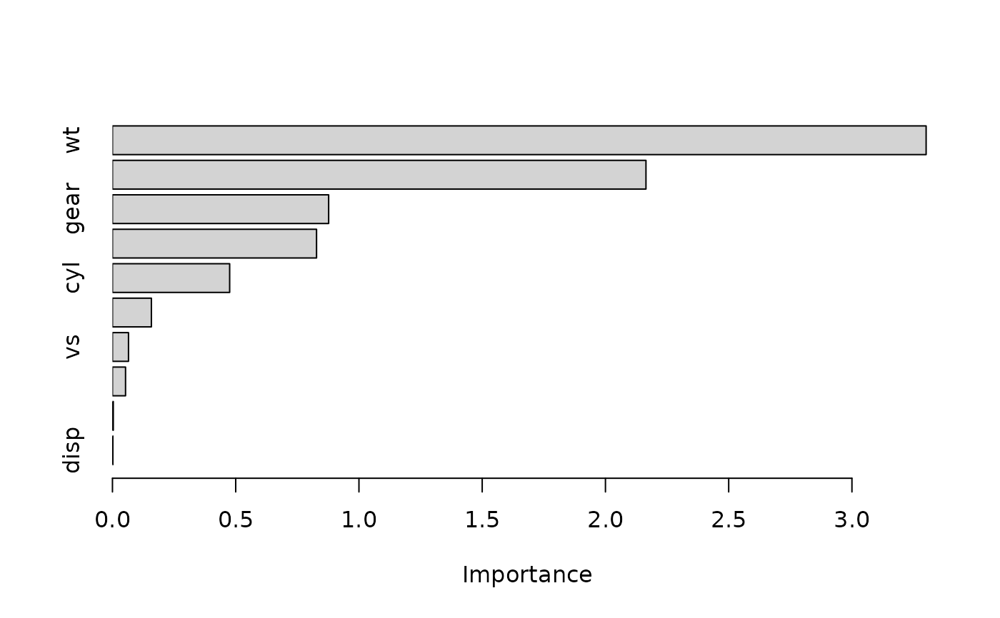
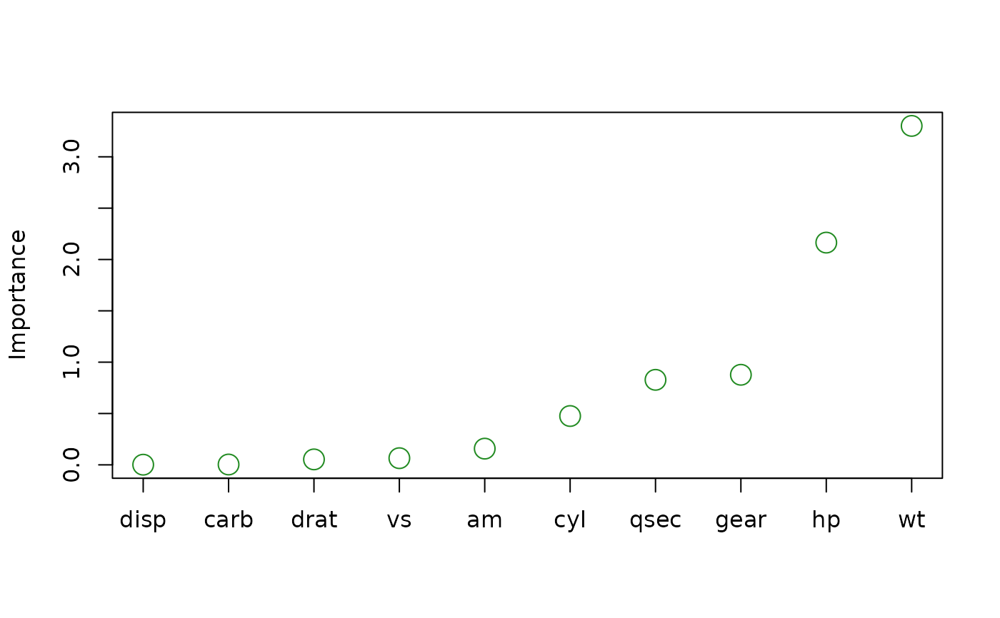
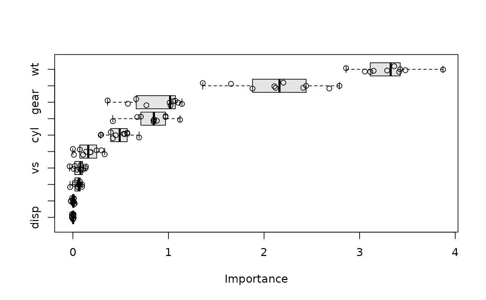

Plot variable importance scores from a vi object using lightweight base R graphics (via the tinyplot package). This is the workhorse behind vip, which is a convenience wrapper that computes the scores and plots them in one call.
Arguments
- x
A vi object (i.e., the output of
vi()or one of thevi_*()functions).- type
Character string specifying which type of plot to construct. The currently available options are described below.
type = "bar"(the default) constructs a bar chart of the variable importance scores.type = "point"constructs a Cleveland dot plot of the variable importance scores.type = "boxplot"constructs a boxplot of the raw permutation scores for each feature. This option can only be used for the permutation-based importance method withnsim > 1andkeep = TRUE; see vi_permute for details.type = "violin"constructs a violin plot of the raw permutation scores for each feature. This option can only be used for the permutation-based importance method withnsim > 1andkeep = TRUE; see vi_permute for details.
- num_features
Integer specifying the number of variable importance scores to plot. Default is
10.- horizontal
Logical indicating whether or not to plot the importance scores on the x-axis (
TRUE). Default isTRUE.- all_permutations
Logical indicating whether or not to plot all permutation scores along with the average. Default is
FALSE. (Only used for permutation scores whennsim > 1.)- jitter
Logical indicating whether or not to jitter the raw permutation scores. Default is
FALSE. (Only used whenall_permutations = TRUE.)- include_type
Logical indicating whether or not to include the type of variable importance computed in the axis label. Default is
FALSE.- ...
Additional graphical parameters passed on to tinyplot (e.g.,
col,fill,pch,cex, ormain).
Value
Draws a plot as a side effect and invisibly returns the (trimmed and sorted) vi object being plotted.
Examples
# Fit a projection pursuit regression model
model <- ppr(mpg ~ ., data = mtcars, nterms = 1)
# Compute permutation-based variable importance scores
set.seed(825) # for reproducibility
pfun <- function(object, newdata) predict(object, newdata = newdata)
vis <- vi(model, method = "permute", train = mtcars, target = "mpg",
nsim = 10, metric = "rmse", pred_wrapper = pfun)
# Plot the results; additional arguments are passed on to
# `tinyplot::tinyplot()`
plot(vis)

plot(vis, type = "point", horizontal = FALSE, col = "forestgreen", cex = 2)

plot(vis, type = "boxplot", all_permutations = TRUE, jitter = TRUE,
fill = "grey90")
